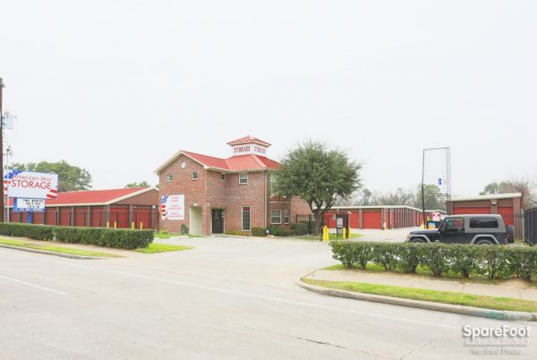

Книги
КнигиГлава 11. Все на своих местах
Перевод для VSplanet.net
Так прошел еще год. Моя жизнь вошла в новый ритм. Брэндон стал намного более уверен в себе. Мы очень хорошо общались. Брюс, видя, как я вкалываю на работе, решил дать мне повышение.
Я начал работать на складе, которым владел Брюс. Он находился на 34й улице в Хьюстоне и назывался American Mini Storage.

Там продавались упаковочные материалы, а также можно было арендовать ячейку для хранения. Также там можно было взять напрокат фургоны и грузовики. Здание было неподалеку от моего дома, но теперь я не мог вернуться в любой момент и посмотреть, как там Брэндон. Я работал с семи утра до девяти вечера, так что мы стали намного меньше проводить вместе. Он был ответственным парнем, плюс поблизости всегда был Рокки 2 — отличный телохранитель, который защищал его вне школы.
Когда я возвращался домой, мы ужинали, рассказывали, как прошел наш день. Я был холостяк, поэтому не особо заморачивался готовкой. Тем не менее, я прошел суровую школу Второго Блока, так что я быстро научил Брэндона, как можно быстро и просто приготовить неплохой обед. Он всегда с восторгом наблюдал, как я разогревал лапшу с курицей и сыром, и все получалось весьма съедобным. А в первый раз, когда он попробовал старый-добрый бутерброд по фирменному рецепту Букера Т. Хаффмена, у него зажглись глаза! Он поистине был моим сыном и быстро освоил науку нехитрой готовки.
В резиденции Хаффменов также всегда наготове были булочки и мясо для гамбургеров, банки чили, консервированное рагу и множество различных макарон и сыра. Что еще нужно? Наши ужины были веселыми, мы ели, смеялись. Иногда мне казалось, что Брэндон — мой младший брат, а не сын. Но как бы это сложно ни было, иногда приходилось откладывать в сторону маску добренького отца и воспитывать его.
Срок моего испытательного срока истек, когда мы с Брэндоном прожили три года. Полицейский, который следил за моим поведением, искренне поздравил меня, пожелал удачи и сказал, что мой долг обществу полностью оплачен. И сделал я это прежде всего тем, что нашел работу, обосновался на хорошем месте и вернул себе сына. В общем, я полностью расстался со своим криминальным прошлым и стал законопослушным гражданином без страхов и опасений. Большой брат, присматривавший за мной все это время, наконец-то отвернулся. Было без преувеличений наслаждением — просто работать и зарабатывать деньги для нас с Брэндоном. То была ситуация как в поговорке — все на своих местах! Я нашел свое место в жизни.
Примерно в то время я купил свою первую машину. Ford Thunderbird 1979. Ничего особенного. Да, старенькая, краска потускнела, но Лэш проверил ее и сказал, что она в порядке. Поэтому полторы тысячи долларов — и я сел за руль!
Продолжаем проводить параллели с GTA. Ford Thunderbird стал прототипом для машины Virgo.
Это было то, что нужно, чтоб распрощаться с автобусами, не заучивать расписание и не носиться за ними как собачка. Теперь я мог возить Брэндона в школу, ездить на работу, в зал, в магазин, тогда, когда захочу. Это было отличным приобретением, мы оба это заслужили. Да, машина не помешала бы мне и ранее, но лучше поздно, чем никогда.
Работа в American Mini Storage ладилась. Я научился у Лэша его философии — неважно, чем ты занят, надо делать это максимально хорошо. Очень скоро я полностью освоил свою профессию на отлично. Если раньше я работал руками — что в Wendy’s, что во Втором блоке, что в жилом доме, теперь я полагался на голову, на компьютеры и на других людей. Я работал в помещении с кондиционером, помогал клиентам с их запросами. Нас там было всего двое, мы работали посменно. Каждая смена была 12 часов. Да, дни тянулись долго, но я ценил каждую минуту.
Вскоре мне предложили небольшую подработку. По какой-то неизвестной причине он решил вернуться в Pier Club, где он не был секьюрити, однако решил приглядывать за тем местом. Каждый день они ходили туда со своим огромным дружком Тони Норрисом (будущий Ахмед Джонсон) и следили за порядком. И если кого замечали, они словно супергерои усмиряли злоумышленников. Как-то раз он спросил меня, не хотел бы я к ним присоединиться? Учитывая все, что он для меня сделал, я ответил согласием.
Но это было не самым моим лучшим выбором. Где-то через недельку Лэш пришел рано утром. Он сказал, что уже некоторое время они с Тони следят за подозрительными типчиками, про которых точно известно, что у них какой-то бизнес с наркотиками. И надо бы разобраться.
Если честно, я подумал, что они выжили из ума, но согласился и быстренько оделся. Когда я вышел, Лэш спросил, готов ли я? Я все еще не проснулся, но ответил, что все в порядке. Я уточнил, что надо делать. Лэш сказал, что они следили за несколькими парнями, которые жили в этом доме. Он считал, что они там занимаются какими-то наркотиками. Поэтому Лэш хотел скрутить их и передать копам. Уж не знаю, почему, но у него был большой зуб на наркодельцов. И он прикладывал все силы, чтобы помешать им изо всех сил. В общем, я пожал плечами и отправился с ними.
Тогда Лэш достал из сумки УЗИ и протянул мне его. Клянусь богом, мой родной брат, который был в курсе и моих приключений в Wendy’s, который знал о моей отсидке, выдал мне полностью заряженный автомат словно бы из фильма Рэмбо! Я быстро огляделся по сторонам, полагая, что в кустах спрятана скрытая камера, и сейчас появится Аллен Фант, который закричит, что меня разыграли.
Но никого не появлялось. Я спросил у Лэша, что мне с этим делать. Я все еще не верил, что Лэш, парень, который всегда был исполнительным и трудулюбивым работником, который всегда был законопослушным гражданином, предлагал мне ворваться в квартиру, словно был ОМОНовцем!
Насколько я понял, полиция сама дала Лэшу и Тони некоторые полномочия на такие действия. Они уже помогли арестовать много преступников, притом вся слава, естественно, доставалась полицейскому участку. Возможно, у них даже были какие-то секретные звания? Не знаю, но в этот раз казалось, что они чересчур перебрали со своей властью.
Лэш объяснил мне, что я останусь снаружи, пока они с Тони зайдут внутрь. На мне будут только те, кто может внезапно появиться из-за угла.
Отлично. Недавно освобожденный заключенный, осужденный за вооруженное ограбление, вышел рано утром на тротуар с автоматическим оружием в руках. Если в моей жизни и были моменты, когда я совершенно не понимал, что происходит, это было тем утром.
Я пытался привести голову в порядок, а Тони и Лэш разнесли чью-то дверь, а затем заорали «Всем лежать!!» и влетели внутрь. Я хорошо видел все происходившее и у меня в голове проносились воспоминания о своих деньках с Бандитами Wendy’s. Даже притом, что это действо санкционировала полиция, я все еще не понимал, для чего мой брат рискует жизнью и свободой. Ради того, чтобы потешить свое эго?
Внезапно из-за дома выскочил парень и побежал в мою сторону. В моих венах забурлил адреналин. Я даже немного затрясся. Я был в ужасе, но нашел силы убедительно произнести: «Эй ты, ни с места». Я чуть не прибавил «Пожалуйста.»
Это было большим блефом, словно как и в тот день с Верноном во Втором блоке. Но на этот раз ставки были выше.
Парень увидел оружие, остановился и тут же присел от страха. И что дальше? Я и сам был слишком шокирован и безумно боялся, что у него самого будет пистолет. Но этого не было. Я приказал ему отправиться в ту дверь к Лэшу и Тони. Те даже не поверили, что я взял того парня. Лэш буквально прыгал на месте, а мне хотелось поскорее смыться и забыть об этом кошмаре.
Когда они заковали всех в наручники, я вернул Лэшу оружие и собрался уходить. Внезапно брат врезал одному из связанных в живот со всей силой. Тот свернулся, упал и закашлялся. Это было чересчур. Речь не о том, что Лэш был излишне жесток, а о том, что кто-то из них мог потом вернуться и отомстить. Я понимал, что потом еще долго буду во сне видеть эту сцену.
Тем не менее, тогда мне удалось поспать. Правда проснулся я все равно на рассвете — благо мне надо было все равно выходить на работу. Я думал, что смогу чуть передохнуть, но был неправ. Симпатичная афроамериканка пришла с целью арендовать контейнер. При этом она была явно заплаканная. Я сохранял профессионализм и не подавал виду, помог ей заполнить бумаги. После этого я отвел ее к контейнерам, она изучила один из них и сказала, что скоро вернется.
Я вернулся в офис и увидел, как она на улице начала ссориться с большим негром. Видимо, ее бывшим парнем. Он кричал на нее. Я вышел к ним и вежливо попросил вести себя спокойно, тихо, иначе мне пришлось бы их выпроводить — все же это была частная собственность. Но парень даже не двинулся с места. Он начал хамить и кричать, что это вообще не мое дело. Более того, он захотел меня ударить, но я успел уклониться и его кулак просвистел мимо моей челюсти. Я закатил глаза и подумал, «О боже мой…» Я нанес удар в ответ, сбил его с ног и пару раз аккуратно ударил головой о тротуар. Я контролировал себя, чтобы не зайти слишком далеко. После этого я отправился в офис и позвонил в полицию, ибо у него могло быть оружие.
Сделав так, я не только защитил себя, но и не дал ему позвонить первым, чтобы потом заявить, что это я напал на него. Полицейские прибыли очень скоро. Я узнал их — это были ребята, с кем я раньше работал в охранной конторе. Они выслушали обе версии истории, затем спросили девушку. Она рассказала им, что я был как добрый самаритянин, пришедший ей на помощь. Ребята улыбнулись, поздравили меня и поблагодарили за хорошую работу. Того парня арестовали за нападение, хотя по голове получил как раз он сам. А девушка оставила мне свой телефон и предложил как-нибудь позвонить ей.
То, как все прошло, прибавило мне еще больше уверенности. В кои-то веки я оказался по правильную сторону закона. Те кандалы, что я мысленно ощущал на себе в последние три года — за время испытательного срока после досрочного выхода — исчезли. Если честно я уже был готов посвятить всю жизнь этой своей работе. Я хорошо справлялся, передо мной рисовались неплохие карьерные перспективы, я мог быть получить повышение, перейти на более денежную и престижную должность. Тем не менее, это была далеко не самая восхитительная работа, так что я иногда подумывал о каком-то разнообразии.
И словно бы прочитав мои мысли, как-то раз ко мне приехал Лэш. На его лице было озадаченное выражение, и он сказал:
— А давай займемся рэсслингом!
Это было настолько удивительно, что я не понял, что он имеет в виду.
Он хлопнул меня по груди и сказал, что мы очень давно были поклонниками, и пора бы попробовать что-то большее!? Он сказал, что мы были большими, сильными, в нас бурлила харизма. Я стоял и держался за подбородок:
— Но как мы это сделаем?
— Братишка, все схвачено. Я нашел школу, где нас научат всему, что нужно. Я тебе говорю, Джуниор, у нас получится!
Я все смотрел на него, но он не шутил. Он был серьезен. И, если честно, мне тоже было бы интересно подняться на ринг и попробовать себя. В конце концов, что я терял? Лэш рассказал, что школой занимался знаменитый рестлер Иван Путски.
Путски я знал. Он был звездой WWF, наделав шуму в свое время.
Как я понял, вскоре после того, как я освободился, Лэш случайно познакомился с Иваном, который пригласил его на просмотр. И с того дня эта идея не покидала мысли Лэша. Меня же волновало только одно — сколько все стоило? Лэш ответил, что восьминедельный курс стоил всего 3 тысячи долларов.
Всего? Три тысячи для меня были как три миллиона. У меня были накопленные пять сотен, но откуда взять остальное, я не знал. Лэш сказал, что если я соберу половину, то Путски разрешил бы оплачивать занятия помесячно. Тем не менее, собрать оставшуюся тысячу было проблемой.
Через пару дней на работе ко мне подшоел Брюс. Мы поговорили и я упомянул рестлинг-школу. Эта идея ему очень понравилась.
— Букер, это прекрасная мысль! Мне кажется, у тебя огромные перспективы, без сомнений!
Брюс сказал, что он был большим фанатом рестлинга, о чем я даже не имел представления! Так что он начал меня расспрашивать дальше. Я рассказал про Лэша, про то, как пару лет назад он познакомился с Иваном Путски, рассказал о школе, о стоимости, о своих сомнениях. Брюс спросил, сколько мне было нужно? Когда я сказал, что необходима была тысяча, он сказал, что это ерунда. Он сказал, что я давно работаю, и ко мне никогда не было никаких претензий. Поэтому как насчет небольшой премии? Я не знал, что ответить. Брюс добавил, что давно думал о премии для меня, но тут это было как нельзя кстати. Он пожелал мне мне удачи, мы пожали руки, после чего я позвонил Лэшу и рассказал хорошие новости.
Брюс ушел, а я сидел в полнейшем восторге. Какой же отличный у меня босс! У него было достаточно денег, и он был готов помочь своим сотрудникам изменить их жизни к лучшему Я не понимал, почему он выбрал меня, особенно учитывая мое криминальное прошлое, но я был очень рад, что так сложилось.
Итак, у меня в кармане были пятнадцать сотен. Мы встретились с Лэшем и отрпавились на улицу South Dairy Ashford, где находилась школа.
Когда мы зашли внутрь, там все было совсем не так, как я ожидал. Мы думали, это будет какой-нибудь грязный подвал или грязный ангар, а на деле оказалось, что это очень симпатичное помещение.
Организация Путски называлась Western Wrestling Alliance (WWA), и дела там делались максимально серьезно. Это было как попасть на шоу WWF. Начищенные ринги, новенькие тренажеры, блестящие маты. Камеры повсюду — они позволяли записать и тут же посмотреть свои матчи. Все было на таком профессиональном уровне, что мы почувствовали себя ветеранами рестлинг-бизнеса с первой же секунды, что мы там провели. Было понятно, что на реализацию концепта WWA уходит много денег, и что это намного больше, чем просто рестлинг-школа.
Я знал, что с конца 60х в Хьюстоне работал промоутер Пол Бош. Он смог сделать очень удачное рестлинг-шоу, которое выходило на местном телевидении, на канале KHTV 39. Мы росли и каждую неделю смотрели его. К сожалению, со временем Бош закрыл территорию, не выдержав агрессивной политики WCW и WWF, их больших контрактов и трансляций по национальному ТВ. Путски при помощи больших денег хотел заполнить ту пустоту, что возникла после ухода Бола.
У Боша был очень интересный промоушн. Его теле-шоу было уникальным проектом, который был успешен долгое время вопреки всем проблемам. Чуть более подробнее — читайте здесь.
Большие деньги поступали от самих рестлеров, которые тренировались у Путски, и которые участвовали в его шоу. Программа включала в себя пять тренировок в неделю на протяжении двух месяцев. В нашем классе было двадцать человек, и нам сказали, что по истечении курса тренировок мы дебютируем на ТВ-шоу.
Ух ты. Вот это перспективы. Нет, мы примерно представляли, что к чему, но чтобы сразу на телевидение? Я посмотрел на Лэша — у него был от удивления открыт рот.
В общем, мы немного повозились на ринге; было ясно, что нам очень многому надо научиться. Никто из нас не умел ничего. Вопросов стало еще больше после того, как выяснилось, что сам Путски был никудышным тренером. Да, мы несколько лет смотрели на него на шоу WWF, но никогда не обращали внимания, что он и рестлер-то так себе. Теперь же мы наглядно понимали, что Иван был просто хорошим исполнителем своего гиммика — рестлер с великолепными физическими данными. Но к счастью, в школе были и хорошие учителя. «Ковбой» Скотт Кейси выступал в WWF в конце 80х, он работал с Железным Шейхом, Грегом Валентайном, Хонки Тонк Меном.
Я сразу понравился Скотту, он взял меня под свое крыло, стараясь донести до меня основы рестлинга: от базовых приемов и до языка, которым рестлеры общаются друг с другом на ринге. Он объяснял и делился со мной всем, что знал. Именно Скотт подсказал мне идею моего первого серьезного рестлинг-гиммика!
Как-то я убирался в одном из контейнеров на работе — его владелец перестал вносить плату и мы конфисковали его содержимое. Там была армейская зеленая кепка, которая мне понравилась, и я забрал ее себе. Вечером я отправился на тренировку, где меня увидел Скотт. Он отвел меня в сторонку и сказал, что она выглядит очень здорово, и в этой кепке я должен ходить каждый день. Широко улыбаясь, он нарек меня Джи.Ай.Бро, величайшим героем Америки.
Джи.Ай.Бро? Что за ерунда? Но затем я подумал, почему бы и нет, и рассмеялся. В конце концов, это же профессиональный рестлинг! И у большинства известных рестлеров были яркие гиммики, которые помогали им лучше взаимодействовать со зрителями. Пусть будет Джи.Ай.Бро!
В то время началась война в Персидском Заливе, так что по стране прокатилась волна патриотизма. Было настоящим безумием найти в оставленном контейнере армейскую кепку после того, как начался вооруженный конфтикл с Саддамом Хуссейном в Ираке. Если и был когда-то наглядный пример поговорки «В нужное время в нужном месте», — это был я в том контейнере в январе 1991 года.
Чтобы довести гиммик до ума, мы усиленно тренировались с Кейси. Самым важным было, конечно же, изучить работу на ринге. К счастью, мне многое давалось достаточно легко. Каждую неделю мне удавалось серьезно улучшать свои навыки. Мне помогали мои прирожденные инстинкты и прежние умения — рестлинг помог мне свести воедино и мои увлечения фильмами о Кунг-Фу, и танцы, которым я посвятил несколько лет. Я использовал множество различны ударов ногами, в моем арсенале были эффектные чопы в стиле Брюса Ли, ну а моим танцевальным ловкости и подвижности завидовали многие.
Наблюдая за мной, Скотт всегда улыбался и качал головой.
— Парень, — говорил он, — у тебя есть все, что нужно. Ты прирожденный рестлер!
Оглавление книги